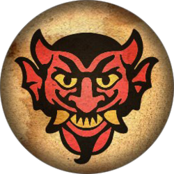
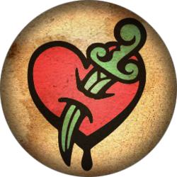
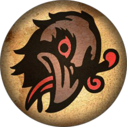
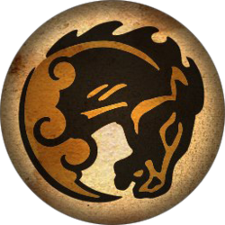
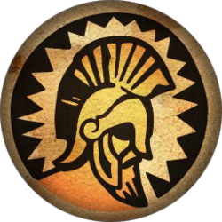
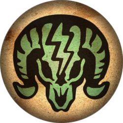
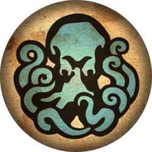
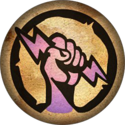

Vigor |
Cast |
Charged Effect |
Manifestation |
Cost |
Upgrade |
|---|---|---|---|---|---|
Devil's Kiss |
Creates a fire grenade that explodes upon impact, deals heavy damage within a wide radius |
Creates stationary trap which deals extra damage | Magma exudes from the player's hand | 23% of base Salts | Devil's Kiss Aid Devil's Kiss Boost |
Possession |
Possesses target devices, causing vending machines to dispense money and automatons to fight on player's side |
Creates stationary trap that possesses devices across a wide range | A ghostly figure creates a green glow around the player's hand | 50% of base Salts | Possession Aid Possession for Less |
Murder of Crows |
Incites a murder of crows to attack targeted enemies | Creates a stationary trap that allows crows to attack in a wider range | Feathers and talons grow from the player's hand | 28% of base Salts | Crows Trap Aid Crows Boost |
Bucking Bronco |
Launches selected enemies into the air | Creates a stationary trap launching and suspending enemies for a longer period | Player's hands crack, revealing glowing blood beneath the cracks | 15% of base Salts | Bronco Aid Bronco Boost |
Return to Sender |
Deploys a temporary shield, blocking damage from all sides | Absorbs incoming damage and creates a stationary trap from it, dealing heavy damage | Creates a metallic sheen around player's hand | 20% of base Salts | Sender Aid Send for Less |
Charge |
Rams target at high speed, dealing heavy melee damage | Builds up charge attack power, allowing for more damage over time | Tornado appears around the player's hand when attacking enemies | 25% of base Salts | Charge Aid Charge Boost |
Undertow |
Throws nearby enemies to the ground, dealing minor damage | Temporarily suspends a selected enemy in the air, increasing damage intake | Barnacles and suction cups appear on the player's hand and arm | 31% of base Salts | Undertow Aid Undertow Boost |
Shock Jockey |
Shocks target, temporarily stunning them while dealing double damage | Creates a cluster of several electric traps in a small range | Crystals appear on the player's hand, displaying an electrical current | 16% of base Salts | Shock Chain Aid Shock Duration Aid |